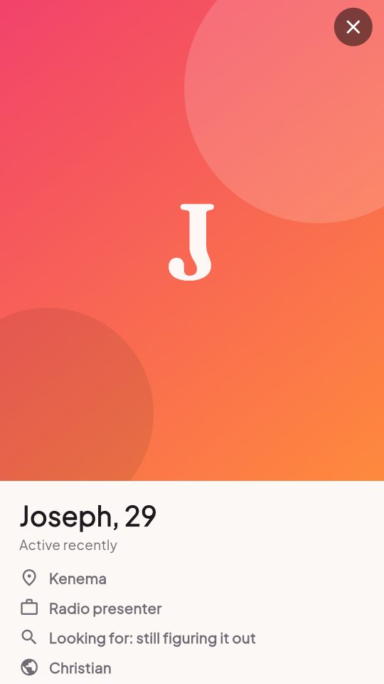
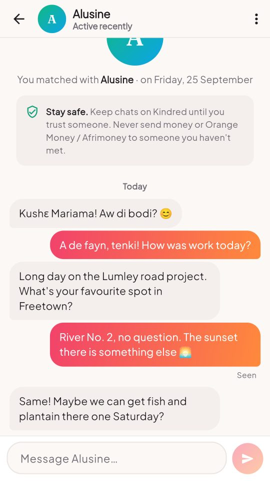

Where Salone hearts meet
Kindred helps single adults across Sierra Leone meet genuine people who share their values — from Freetown to Kenema, for a relationship, marriage or new friends.
Free · Adults 18+ only · Coming to Google Play soon
From hello to a first date
No complicated forms. Set up your profile in about a minute and start meeting people near you.
Create your profile
Add a few photos, a short bio, your interests and the languages you speak.
Swipe to connect
Like, pass or send a Super Like. Filter by age and town, or see all of Salone.
Match and chat
When you both like each other it's a match. Say "Kushɛ" and take it from there.
Built around life here, not somewhere else
Kindred is designed for Sierra Leone: its towns, its languages and its phones.
- Towns across every regionFreetown, Bo, Kenema, Makeni, Koidu, Port Loko, Lungi, Kabala and more.
- Your languagesShow that you speak Krio, Temne, Mende, Limba, Fula, Kono and others.
- Light on dataPhotos are shrunk on your phone before upload, and the app remembers what it has loaded, so it works on slow connections.

Conversations that start easy
Only people who like each other can chat, so every conversation is wanted. Messages arrive instantly, with read receipts and icebreakers for the first hello. When you're ready, send a photo or make a free voice or video call.
- Real-time messagesSee when your match has read your message.
- Photos, videos and callsShare a photo or short video, or call on voice or video, all without giving out your number. Photos you receive stay blurred until you tap.
- Private by designYour exact birthday is never shown, only your age. Religion is always optional.

Date with confidence
Kindred is only for adults, and you stay in control of who can reach you.
Questions, answered
Is Kindred free?
Yes. Creating a profile, swiping, matching, chatting and calling are all free. Calls use your mobile data or Wi-Fi.
How do I install the Android app?
Tap "Get the Android app" on your phone. When Android asks, allow your browser to install apps, then tap Install. Kindred is also coming to Google Play.
Is there an iPhone app?
Not yet. iPhone users can use Kindred in Safari at kindred-sl.netlify.app/app and add it to the home screen (Share → Add to Home Screen). You'll see the same people and chats as on Android.
Who can see my profile?
Other members looking for someone like you, within the age range they have chosen. Nobody sees your email, and nobody sees your exact date of birth, only your age.
How do I delete my account?
In the app go to Profile → Delete account. Everything is deleted straight away: photos, matches and messages. You can also request deletion here.
Your kindred spirit might be one swipe away
Join Kindred today. It's free and takes about a minute.